Exploratory Data Analysis of Company Lay-offs
Table of Contents
Task
This project is to conduct an exploratory analysis on a dataset of company earnings and company lay-offs from 2020 to 2023. This Exploratory Data Analysis (EDA) aims to decode the intricate patterns within sales data, contributing to a recent rise in employee layoffs and facilitating data-driven insights to notice any trends.
The original data contained 2,361 data entries and was obtained from GitHub
Tools Utilised


Background
From 2020 to 2023, companies worldwide grappled with unprecedented challenges, including the COVID-19 pandemic, economic downturns, and technological disruptions. These factors forced many businesses to make layoffs, to streamline operations and adapt to changing market conditions. The pandemic, in particular, led to widespread workforce reductions as companies faced reduced demand, supply chain disruptions, and operational constraints. Technological advancements and automation initiatives further reshaped the labour landscape, with tasks being automated or streamlined, leading to job losses in some sectors.
Conducting an Exploratory Data Analysis (EDA) on a dataset of company layoffs from this period can provide insights into the underlying trends and factors driving workforce reductions. By understanding the impact of external factors, identifying industry-specific trends, exploring regional variances, examining demographic and occupational characteristics of laid-off employees, and informing strategic decision-making, stakeholders can develop targeted interventions to support affected workers and enhance organisational resilience.
Data Cleaning using SQL
1. Removing duplicates from data
- Utilising the "ROW_NUMBER" window function, a common table expression (CTE) was made to determine how many duplicates were present.
- A new column was added, called "row_num" and each unique value would appear as "1". Any duplicates would appear as "2".
- 5 duplicate data entries were found and were removed from the data.
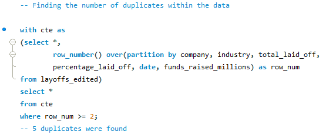
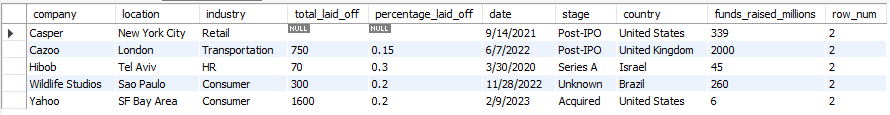
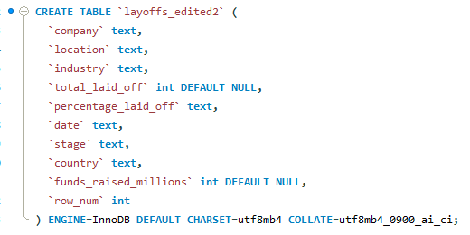
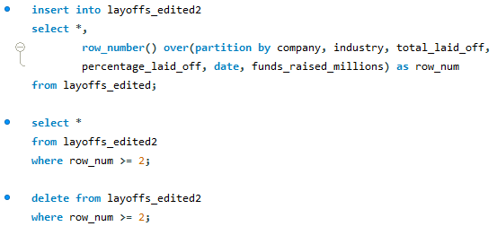
2. Correcting the Data Formatting
- The "TRIM" function was used on the "company", "stage" and "country" columns. This affected 11 rows of data.
- Each field category was inspected to ensure that no character errors were present or data entries written in different formats within the same column (e.g. "United States" and "USA" in the "country" column)
The screenshots of the SQL queries below showcase the cleaning performed on the data:
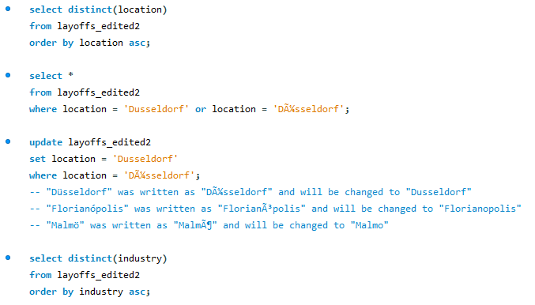
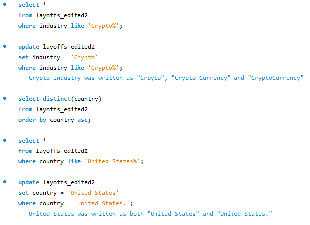
3. Converting the date into a date format
- An error would initially occur when importing date as a "Date" field instead of a "Text" field into MySQL.
- The date was originally obtained in an American mm/dd/yyyy format.
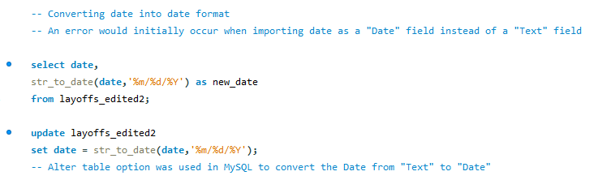
4. Addressing Null/Blank Values
- 4 blank/null entries were found in the "industry" column. As the company name is known, which were "Airbnb", "Bally's Interactive", "Carvana" and "Juul", these were compared against any existing data entries for the same company.
- 3 of the blank/null data entries, "Airbnb", "Carvana" and "Juul", had existing data entries for their respective companies, so the known industry was added into the blank/null field.
- The "Bally's Interactive" data entry didn't have any pre-existing data entries. Therefore, further research was performed to understand what the company's involvement was. "Bally's Interactive" would fit as "Media" as it is known for its involvement in entertainment and online betting, basing it on the existing list of industries.
- 361 rows of data were deleted where both the total_laid_off and "percentage_laid_off" columns were null, as the null data here would not been particurlarly useful.
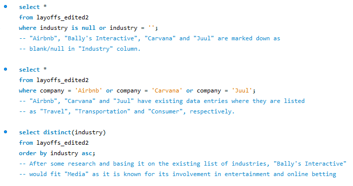
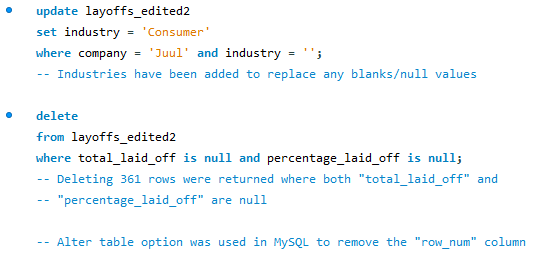
After data cleaning, the Alter table option was used in MySQL to remove the "row_num" column. The cleaned data was exported as a .csv file using MySQL's Table Data Export Wizard.
Key Findings and Visualizations using SQL, Python and PowerBI
Loading and summarising the data using Pandas
- The data was loaded into Python using the "pd.read_csv()" Pandas function.
- Using the "type()" function in Python, we can determine that the data is already in a DataFrame format. Therefore, we would not need to construct a DataFrame using "pd.DataFrame()".
- Using the "info()" Pandas function, it is observed that the date appears as an object rather than in a datetime format.
- The "to_datetime()" Pandas function was utilised to covert the date into a date-time format.
From the data summary:
- There are 1632 unique companies out of 1995 data entries.
- The data was obtained from companies within 51 countries, with 1294 entries from the United States. This equates to 65% of the gathered data being from the United States.
- The most common industry was the finance industry, with 239 data entries.
- The maximum earnings that a company had obtained at one given point was $26 billion.
- The most people laid off at one given point was 12,000 people.
- The first data entry was taken at 11/03/2020 and the latest one was taken at 06/03/2023.
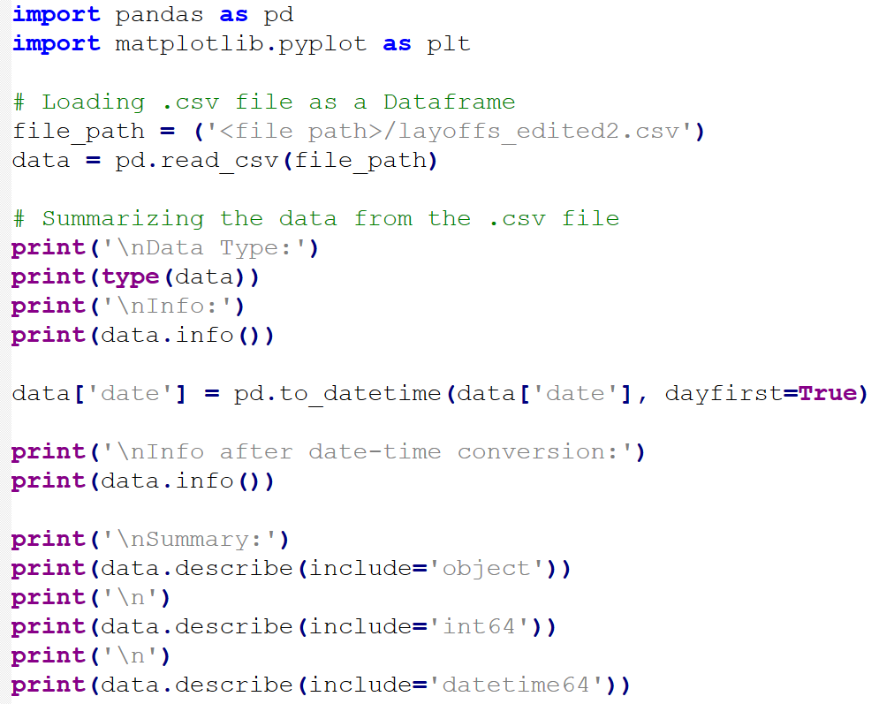
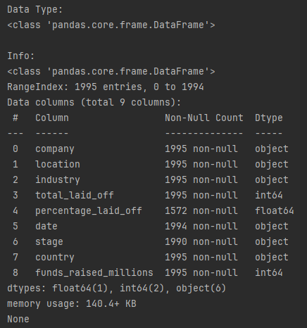
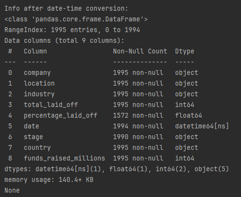
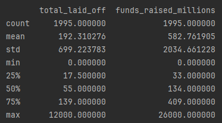
- Surprisingly, 527 out of the 1995 data entries are all based in the San Fransisco Bay Area.
- A SQL query was created to confirm this finding and to take into account multiple data entries for the same company.
- The SQL query reveals that 420 unique companies are based in the San Fransisco Bay Area, with the 2nd highest being based in New York City at 170 unique companies.
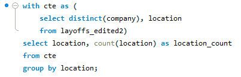
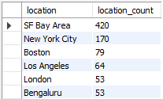
Analysis of the most and least layoffs by industry
- The Consumer, Retail, Other, Transportation and Finance industries have the largest number of layoffs, with 45182, 43613, 36289, 33748 and 28344 people laid-off, respectively.
- For the consumer and retail industries, the layoffs are likely due to the increased costs of running large operations. The consumer market includes many companies related to gaming and social media, which require substantial resources to maintain large data servers. The recent trends in 2024, such as the rising cost of electricity, have exacerbated these expenses. To mitigate these increased costs, companies have resorted to laying off employees. Similarly, the video game industry is experiencing higher costs for development, maintenance, and marketing. Consequently, layoffs have become a common strategy to manage these financial pressures.
- The "Other" category encompasses a diverse range of industries, spanning from technology to transportation. When combined, these sectors contribute significantly to the total number of layoffs.
- The Manufacturing, Fin-Tech, Aerospace, Energy and Legal industries have the largest number of layoffs, with 20, 215, 661, 802 and 836 people laid-off, respectively.
- Both the Manufacturing and Fin-Tech industries have relatively low layoff numbers due to their stable nature and lower susceptibility to economic fluctuations.
- Aerospace, Energy, and Legal industries would experience fewer layoffs due to stable demand from government and business contracts, which require employees with a highly specialised skillset.
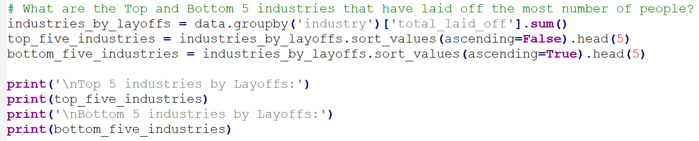
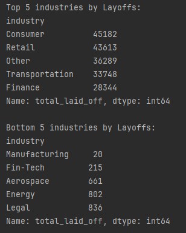
Analysis of Which Year Was the Most Profitable for the Top 5 Earning Countries
- United States was consistently the highest earning country, with the highest earning year being 2022 for the United States.
- This is likely due to companies going back to normal operation, following the COVID-19 Pandemic.
- No data was obtained from China in 2020 but 2020 was the highest earning year for both India and the United Kingdom. This can be attributed to a large rise in online shopping and the increased consumption of online entertainment and media, following the COVID-19 Pandemic lockdowns.
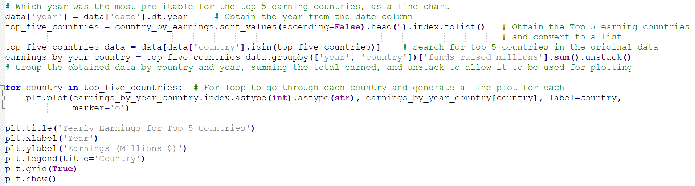
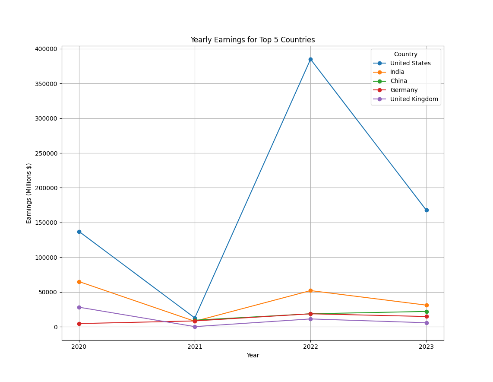
- 2021 was consistently the lowest performing year for the top 5 earning countries. This can be attributed to a bias in the data, where there was signficantly less data entries dating in 2021.
- To confirm this, a SQL query was created to count the total number of entries for each date.
- It can be seen that there was very little data entries in 2021, with only 35 entries, compared to 2020 and 2022, with 532 and 1030, entries respectively.
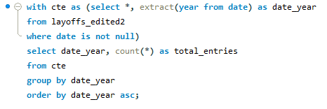
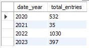
PowerBI Dashboard:
- Data visualizations were made using PowerBI to provide insights on some of the data across different countries and industries, with included filters. Additional filters for both the date and company was added.
- The highest earning earning company across 2020 to 2023 was Uber, earning $123.5 billion.
- The top country with the highest number of layoffs was the United States. However, this finding is largely due to skewed data, with a large majority of data entries being based in the United States.
- The highest average percentage of layoffs was found to be the Aerospace industry. However, based on previous findings, this can largely be attributed to both a smaller sample of data from aerospace industries and with aerospace companies being smaller than large comporations. With this, we can gain insight on how layoffs having a bigger impact on the aerospace companies compared to large corporations such as Uber, Meta and Netflix.
- Interestingly, companies that are earning more money have shown to do less layoffs compared to companies that are losing more money. This is most likely to recoup any lost revenue. An exception to this is Twitter, which has seen a spike in layoffs, most probably due to the acquisition of Twitter by the owner of Tesla, Elon Musk.
Conclusion
This portfolio showcases diverse analytical skills; utilizing SQL for data cleaning, and SQL and Python for in-depth analysis for company sales and employee layoff figures. Python and PowerBI were employed to visualise trends and highlight peak years.
The dataset, comprising data from 1632 unique companies across 51 countries, revealed significant trends in layoffs, earnings, and industry performance. While certain industries like Consumer, Retail, and Finance experienced substantial layoffs, others such as Manufacturing and Fin-Tech remained relatively stable. The dominance of the United States in earnings and layoffs underscores the importance of geographical context in understanding industry dynamics. Additionally, the PowerBI dashboard provided rich visualizations, highlighting the top-earning companies and the disproportionate impact of layoffs in the Aerospace industry. Overall, this analysis offers valuable insights into the interplay between economic factors, industry performance, and geographical trends, enabling informed decision-making for stakeholders across various sectors.